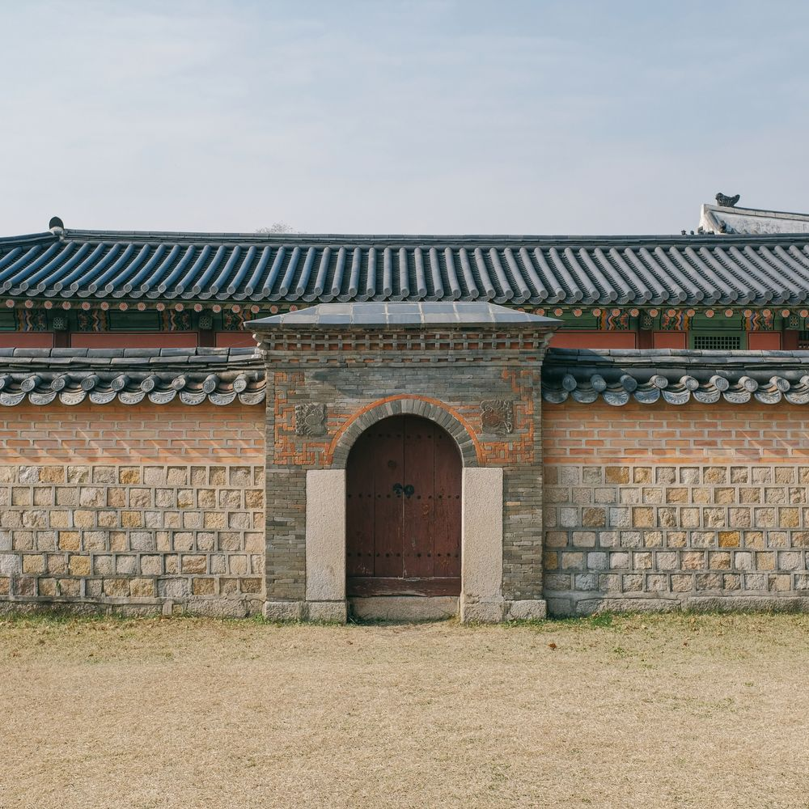
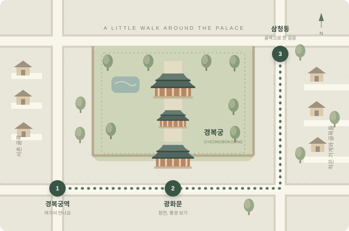

가장 편안한 시작
토요일 아침 산책
공원 한 바퀴, 그리고 따뜻한 커피.
주말의 시작을 조금 산뜻하게 열어요.
약 60분 · 평탄한 길가벼운 대화 ↗
익숙한 동네를 조금 낯설게.
목적지보다 함께 걷는 시간을 좋아하는
주말 산책 모임, 느린걸음입니다.
가벼운 신발 한 켤레면 충분해요. 혼자 와도 괜찮아요.
그날의 기분에 맞게 골라요.
잘 걷는 것보다, 나오는 게 더 중요하니까요.
다음 길을 찾고, 지난 걸음을 꺼내 봐요.
경복궁 주변의 길을 둘러보고, 네이버지도에서 장소를 확인해요.
경복궁 코스 보기 ↗돌담 옆의 햇살부터 조용한 골목까지. 가상의 산책 일기를 담았어요.
기록장 펼쳐 보기 ↗날씨부터 물 한 병까지. 가볍게 나서기 위한 준비 목록.

코스 개념도 · 실제 지도 아님궁 안으로 들어가지 않고, 주변 풍경과 골목을 구경하는 코스 아이디어예요. 실제 보행 경로는 네이버지도에서 확인해 주세요.
네이버지도에서 경복궁 보기 ↗네이버지도가 새 창으로 열립니다.
계획대로 걷는 날보다, 딴길로 샌 날이 더 기억나더라고요.
10시에 만나기로 해 놓고 내가 12분 늦었다… 커피 두 잔 사 가서 겨우 용서받음. 담장 옆에 햇빛이 딱 들어서 잠깐 서 있었다. 친구가 이제 출발하자고 세 번쯤 말한 듯. 걷자고 만나 놓고 멈춰 있던 시간이 더 긴 것 같다.
다음엔 따뜻한 거 말고 아이스로. 걷다 보니 생각보다 더웠다.
분명 서점 가는 길이었는데 골목 고양이한테 붙잡혔다. 가까이 오길래 친한 척했더니 내 옆 화분으로 가 버림ㅋㅋ. 결국 서점은 못 갔고 빵만 사서 돌아왔다. 봉투에서 냄새가 너무 나서 오는 길에 하나 먹었다.
고양이 사진은 흔들려서 전부 실패. 다음엔 멀리서 조용히 구경만 해야지.
나오기 전까지는 진짜 귀찮았다. 딱 한 바퀴만 돌고 가자고 했는데 벤치에서 빵 먹으며 수다 떨다 보니 35분이 지났다. 운동했다고 하기엔 애매하지만, 집에만 있었으면 이 얘기는 못 했겠지.
오늘 챙긴 것: 물. 안 챙긴 것: 휴지. 다음엔 꼭 챙기기.
일기·인물·날짜는 가상의 예시입니다. 사진은 산책 분위기를 보여 주는 기존 공개 사진으로, 기록 속 당일 촬영 사진은 아니에요.
잘 아는 사람도, 특별한 준비도 필요 없어요.
함께 걸어 보고 싶은 마음만 가져오세요.
지금 나에게 필요한 분위기를 골라 주세요.
예시: 토요일 오전 10시, 가상 동네공원 입구.
실제 운영 시 확정된 안내로 바꿉니다.
물 한 병과 가벼운 마음. 그 정도면 충분해요.
물론이에요. 혼자 와도 자연스럽게 어울릴 수 있는 작은 모임을 지향합니다. 대화를 억지로 나누지 않아도 괜찮아요.
기록을 위한 운동 모임이 아니에요. 가장 여유로운 사람의 속도에 맞춰 걷고, 중간에 쉬어 갑니다.
안전한 산책이 어려운 날에는 쉬어 갑니다. 실제 운영 시 일정 변경 기준과 안내 채널을 미리 공유할 예정입니다.